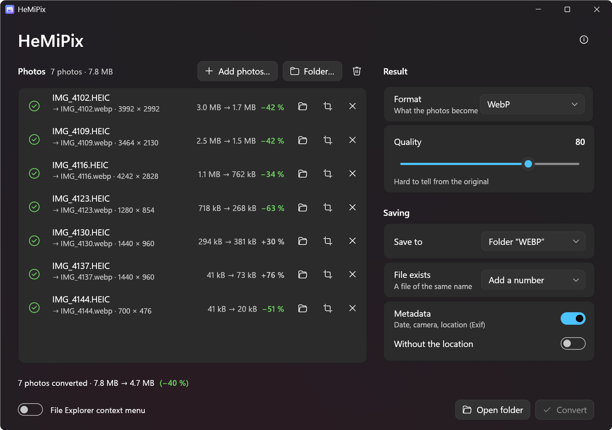

HeMiPixBeta
Photos from an iPhone are HEIC – and many programs and websites still want JPG. HeMiPix converts photos between HEIC, JPG, PNG, WebP and TIFF – whole folders at once –, makes them smaller and lets you crop each one.
Windows 10 / 11, x64 and ARM64. One small program. HEIC is read by Windows itself (the free HEIF and HEVC extensions of the Microsoft Store – most PCs have them, HeMiPix offers to install them when not). Also in HeMi Launcher.

What it does
Many photos at once
Drop photos or whole folders onto the window; they are converted on all cores, with the progress and the saved space shown.
Any common format
Reads HEIC, AVIF, WebP, PNG, JPG, TIFF and BMP, writes JPG, PNG, WebP or TIFF – transparency kept where the format has it.
Smaller
A quality slider for JPG and WebP with a hint what the value means; the saved space shown for every photo.
Crop
A preview with a frame to drag – free or 1:1, 4:3, 3:2, 16:9 – for any photo of the list.
Nothing lost
Photos come out upright; the date taken, the camera and the location (or not – your choice), the colour profile and the file date stay.
Private
The photos never leave your PC. It goes online only when you install the HEIC extensions of Microsoft.
Downloads
| HeMiPix-Setup.exe | The installer: just for you or for all users, with a Start menu entry, an optional desktop shortcut and an uninstaller. |
| HeMiPix-Portable.zip | Just the program – run it from any folder (-arm64 for Windows on ARM). |
| HeMi Launcher | Or get it with HeMi Launcher – it installs and updates all HeMi apps. |
| Problems, ideas | GitHub Issues |